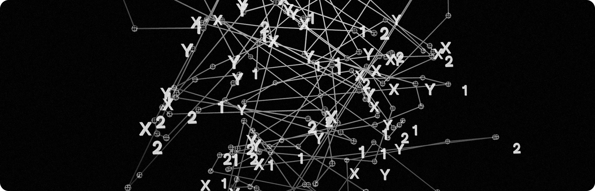

MCP Alignment
Organisations developing LLM applications should embed business context into their LLM workflows. MCP can drive alignment, collaboration and faster development across teams.
Prefer listening over reading? 🎧 Listen (AI-Generated Audio Version)

Organisations developing LLM applications often face recurring challenges with aligning technical, product and business teams. Too often, technical teams build tools or applications in isolation, leading to fragmented efforts, communication gaps and slower development cycles. A significant contributor to these inefficiencies is the persistence of information silos, where teams fail to share knowledge effectively. These silos lead to duplicated work, redundant data and misaligned priorities, further complicating the already complex process of building and integrating LLM applications.
Moreover, technical decisions are frequently disconnected from broader business objectives, leading to inefficient resource use and outcomes that do not fully meet strategic goals.
The Model Context Protocol (MCP) can help organisations address these challenges by embedding business context directly into technical workflows. Through standardised tools, structured resources and predefined templates, MCP helps ensure consistency in technical decisions and alignment with strategic goals, accelerating development and improving team collaboration.
How MCP Can Help
MCP offers a specialised layer of abstraction designed explicitly for building and integrating LLM applications, simplifying development and integration efforts. By leveraging MCP, organisations can avoid reinventing the wheel, benefiting from standardised tools and resources for LLM workflows. Unlike general-purpose APIs, MCP is purpose-built for LLM applications, providing tailored support for functionalities specific to the needs of LLM integration. For example, MCP supports dynamic self-discovery, enabling clients to query MCP servers directly to ask “What do you do?” allowing servers to communicate their capabilities automatically. This makes it easier and faster for teams to understand and integrated new functionalities without extensive manual configuration.
MCP also introduces a consistent interface and communication pattern across all servers. This uniformity contrasts with traditional APIs, where each API is unique and requires custom integration efforts. By standardising interfaces and interactions, MCP can dramatically streamline technical collaboration and align technical implementation directly with business objectives and strategic priorities.
Imagine a company building an internal enterprise assistance that allows employees to interact with CRM systems, internal knowledge bases and financial data in real time. Instead of creting custom connectors for each system, team can leverage MCP servers that expose capabilities in a consistent way. This means:
- Business requirements (e.g. “retrieve financial trends” or “fetch CRM records”) are translated into structured tasks using the same protocol
- Information silos are reduced because MCP servers and their capabilities are accessible and reusable across teams
- Product and business stakeholders can define strategic queries that directly map to technical capabilities—keeping development aligned with business priorities
Key Considerations
Successfully implementing MCP requires more than just technical implementation. It requires strategic clarity and an understanding of potential challenges. Organisations should define clear use cases where MCP alignment will deliver tangible value, such as integrating internal knowledge systems. It is also important to note that MCP does not replace existing APIs, instead it builds on them, extending their value through a standardised, LLM-focused interface.
Security and governance must be a priority. Organisations must have robust access controls mechanisms and regular audits to prevent vulnerabilities like prompt injection and unauthorised access. In addition, collaboration and transparency are key for successful adoption. Encouraging teams to share MCP servers and documentation minimises duplicate and redundant work and aligns technical efforts with strategic goals. Finally, continuous monitoring, tracking integration health, measuring MCP usage and proactive management of emerging risks, ensures long-term success and adaptability as business needs evolve.